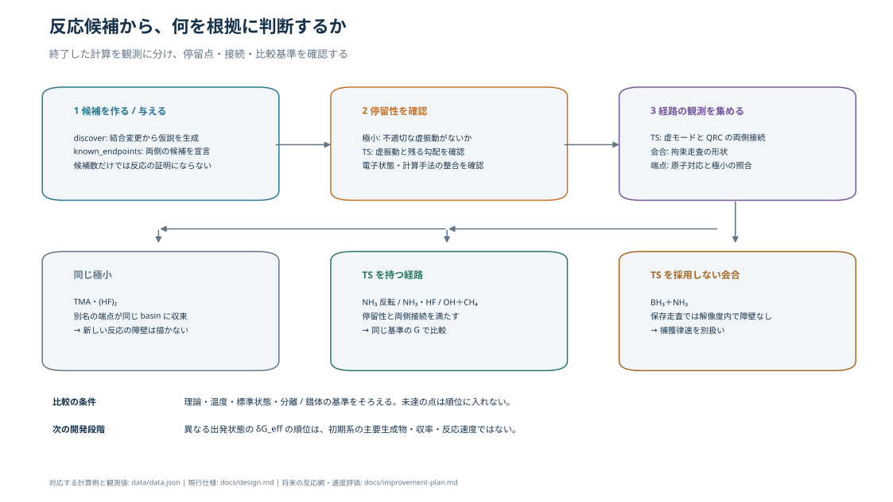
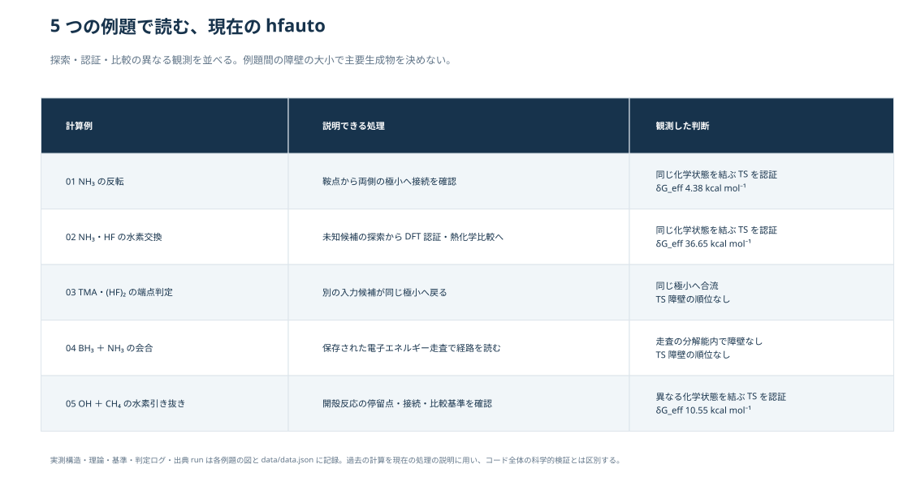
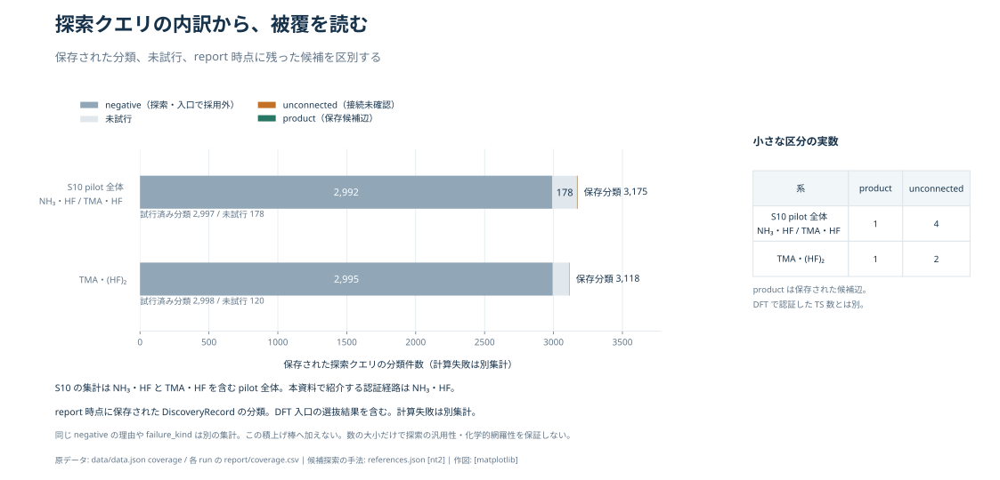

この資料で確認できること 候補の発見、TSの認証、極小への合流、障壁なしの経路、条件付きのエネルギー比較。W3〜W5の保存結果を使い、新しい量子化学計算は行っていません。
主要生成物比や速度定数の予測は、この資料の実証範囲に含めません。停留点の自由エネルギー図と、電子エネルギーの計算経路は分けて表示します。
全体の判断チャート・例題の位置付け・探索件数を見る



01
構造を比較する
ドラッグで回転、ホイールで拡大。2つの原子を順にクリックすると、その保存構造の距離を表示します。原子番号は各構造のXYZの順番です。
HCNOFB結合線は構造閲覧用の距離判定。反応の認証とは別です。
02
経路とエネルギーを読む
横軸が離散状態の図では、接続線は順序の案内です。時間、距離、連続したIRCを表していません。図ごとにゼロの定義・エネルギー量・計算手法を確認してください。
数値と比較基準を見る
03
何を根拠に判断したか
保存された観測と認証
この結果から分かる範囲
実行された判断ログを見る
探索件数と未解決を見る
04
実際に計算した経路上の構造
保存された節点だけを切り替えます。節点間の構造補間は行いません。候補探索の人工力を使うNT2の走査は、断熱的な最低エネルギー経路と区別します。
原子を2つクリックすると距離を表示します。
05
出典・再現性
この例題の計算元・ファイル照合情報を見る
文献は探索・認証・熱化学・表示の方法を説明するために参照しています。図の数値と構造は本リポジトリの保存計算に由来します。